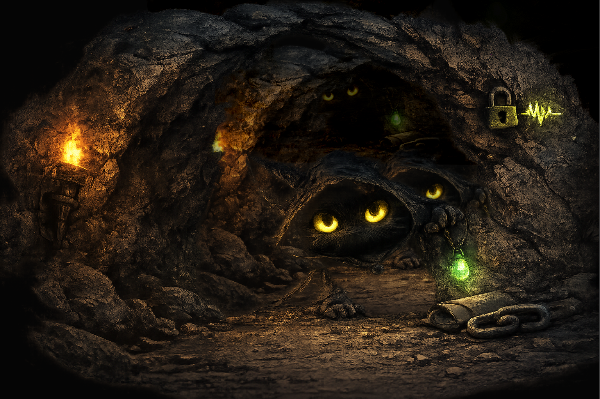
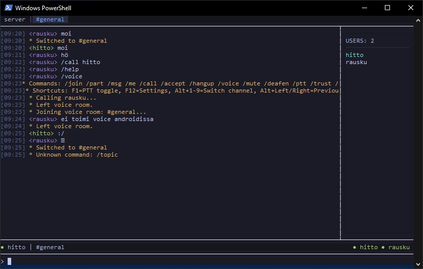

Private by design
End-to-end encrypted messaging and calls, certificate pinning with TOFU, and platform-specific key protection where available.
secure tunnel ready
GROTTO.chat combines irssi-like terminal aesthetics with modern end-to-end encryption, voice rooms, file transfers, and self-hosted servers.
Signal Protocol, voice rooms, file transfer, search, themes, and an admin TUI.
[ secure tunnel ready ]
[ voice caverns online ]
[ file transfer active ]
[ admin tui available ]
GROTTO.chat is for friend groups, private communities, and people who want a quieter place to talk. Not an engagement machine. Not a work dashboard. Just encrypted chat, voice, files, and servers for groups that prefer their own cave.
End-to-end encrypted messaging and calls, certificate pinning with TOFU, and platform-specific key protection where available.
Group chats, private calls, voice rooms, file transfer, search, and server discovery without turning your conversations into a product funnel.
Inspired by irssi and classic terminal clients, with modern usability features like themes, mouse support, notifications, and mobile security features.
secure messaging
voice and real-time communication
everyday usability
server administration
cryptography: active
GROTTO.chat uses Signal Protocol primitives for end-to-end encrypted messaging, including X3DH for key agreement and Double Ratchet for forward secrecy. Group chats use Sender Keys for efficient multi-party encryption. Android clients can additionally use biometric protection for identity key access, SQLCipher for local database encryption, and screen capture protection.
Host a private server for your group, manage it through the admin TUI, and decide whether it stays private or appears in the public server directory. GROTTO.chat is designed to work well for small communities that want control without enterprise nonsense.

desktop / tui
The desktop experience keeps the minimal, text-first feeling that made terminal chat clients great, while adding practical comforts like mouse support, search, resizing, themes, and richer media handling.

android security
Android support adds push notifications, biometric key protection, SQLCipher database encryption, and screen capture protection.

GROTTO.chat is built for people who want a more intentional communication space. It is not designed to maximize engagement, distract your group, or push everyone into a giant global feed. It is meant to feel smaller, calmer, and more yours.
Download the client, host your own server, and build a quieter encrypted space for your group.
Private chat, voice, files, and servers for friend groups.